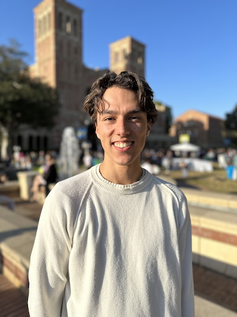
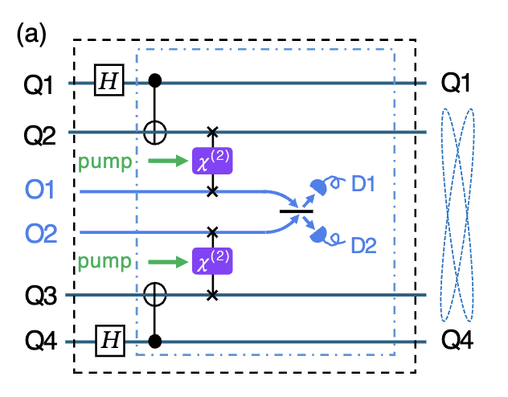
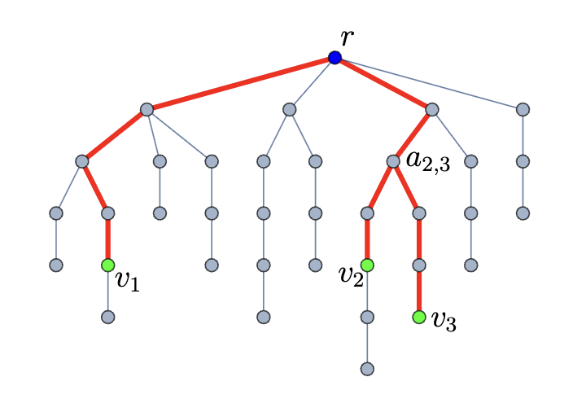
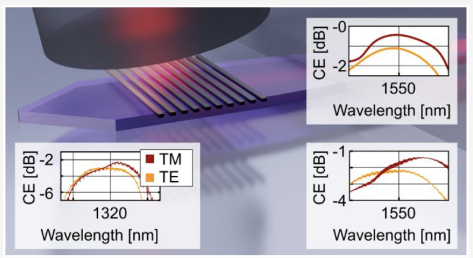
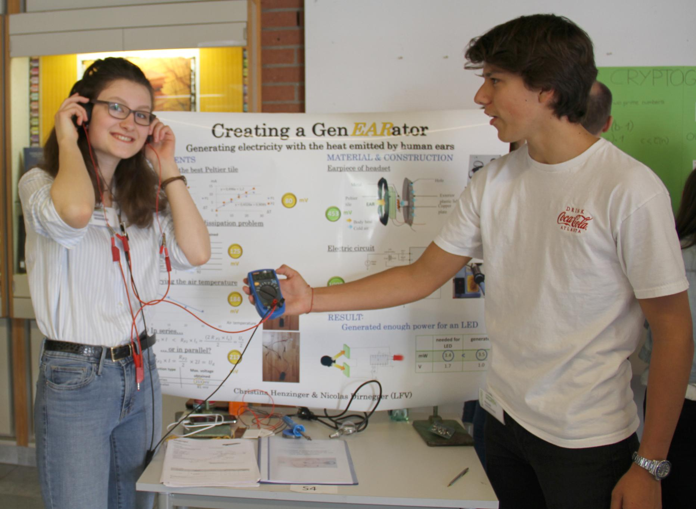

About

I am a PhD candidate in Electrical and Computer Engineering at UCLA, advised by Prof. Prineha Narang, expecting to defend in January 2027. My work sits on the seam between superconducting qubit hardware and quantum information theory: I design and measure circuit QED devices, then build the models that predict how those devices behave once they are connected to each other.
Two threads run through it. The first is nonreciprocity on chip — using superconducting diodes as a coherent, direction-dependent element for two-qubit gates. The second is what happens when you leave the fridge: transduction to optical photons, entanglement distillation across lossy channels, and routing protocols for distributing multipartite entanglement over a real network.
I have worked at IBM Quantum on optical links between superconducting processors, at AFRL, and most recently at Nokia Bell Labs on polarization-entangled photon distribution and teleportation over fiber at telecom wavelengths.
Alongside the research I founded the Quantum Computing Student Association, a nonprofit now running chapters at five California universities, and its device-design division, the Quantum Device Consortium.
Before UCLA I completed a BSc in Electrical Engineering at ETH Zürich, where I worked on silicon nitride grating couplers for photonic integrated circuits, and an MSc in Physics at UCLA focused on mesoscopic optics and quantum electronics.
Publications & preprints
-
2026
Probing time-reversal-symmetry breaking using a nonlinear superconducting ring resonator
A multimode ring resonator whose own nonlinear cross-mode interactions act as a built-in amplifier. Driving a two-mode circuit with self- and cross-Kerr nonlinearities near the bifurcation threshold forces the photon populations into a symmetric configuration — which then breaks measurably under even weak time-reversal-symmetry breaking in a coupled quantum material.
-
2026
An extensive theory of nonlinearly intercoupled pseudomodes for noise model reduction in circuit QED
Garraway's pseudomode construction, generalized to nonlinearly intercoupled auxiliary modes, so that a dissipative environment around a Josephson nonlinearity can be reduced without hiding the approximation.
-
2026
Distilled remote entanglement between superconducting qubits across optical channels
A hybrid Monte Carlo model mapping transducer device specifications onto system-level channel performance, with 2-to-1 and 3-to-1 distillation. Extreme photon loss distillation performs best, and present-day transducers with 0.5 added photons already sit at the threshold for Bell pairs above 50% fidelity.

-
2025
Nonreciprocal quantum information processing with superconducting diodes in circuit quantum electrodynamics
An asymmetric SQUID, flux-biased into a superconducting diode, gives direction-dependent resonance shifts in transmission — and from there, coherent nonreciprocal qubit–qubit coupling.
-
2024
Efficient multiparty entanglement distribution with the DODAG-X protocol
Routing multipartite entanglement over destination-oriented directed acyclic graphs, which cuts graph verification and path-finding overhead sharply on grid-lattice and small-world topologies.

In the press
-
Dec 2025
One way or another: UCLA researchers report on-chip diode could simplify quantum processor architecture
A feature focused on what chip-level nonreciprocity would mean for architecture: today’s processors depend on ferrite circulators and isolators that are physically larger than the chips they protect and must be mounted off-chip inside the fridge, capping how many qubits can be wired to the coldest stage. The piece walks through the direction-dependent resonance shift, the directional half-iSWAP gate, and the selective Bell-state generation that follows.
-
Nov 2025
Superconducting diodes enable nonreciprocal quantum information processing with tunable Bell-state generation
Coverage emphasising the route from a flux-controlled asymmetric SQUID to one-way signal routing, and the prospect of building modular processors with less cryogenic wiring and a smaller footprint.
-
May 2025
Superconducting resonators detect time-reversal symmetry in exotic matter states
On the ring-resonator proposal, and why self- and cross-Kerr nonlinearities make the imaginary part of the coupling a measurable signature of broken time-reversal symmetry — a microwave resonator repurposed from readout hardware into a probe of exotic order.
Community
Founder
Quantum Computing Student Association
A nonprofit built on a simple premise: quantum technology should not stay locked inside graduate programmes. QCSA runs talks, workshops and events that bring students and the public into contact with working quantum science — computing, sensing and algorithms alike. It operates alongside UCLA’s Center for Quantum Science & Engineering, and has been supported by Google, NVIDIA, Rigetti, Keysight, Zurich Instruments, Quantum Machines, HRL, qBraid and the Unitary Foundation.
Founder
Quantum Device Consortium
QDC is an open association for people who design and simulate quantum devices. We maintain and extend the open-source tooling the field actually runs on — Qiskit Metal, AWS Palace and others — and we organise the Quantum Device Workshop, an annual conference drawing over five hundred attendees worldwide. Research partners include Google Quantum AI, NVIDIA, Alice & Bob, Northwestern, USC, the University of Oregon and the Niels Bohr Institute.
Earlier work
2022
Efficient silicon nitride grating couplers
Silicon nitride is an attractive platform for photonic integrated circuits — low propagation loss, CMOS compatible, tolerant of high input power — but getting light from a fiber into a micron-scale waveguide is the bottleneck. I demonstrated a SiN grating coupler with under 0.5 dB coupling loss using a back reflector, and a 40 nm 1 dB bandwidth using amorphous silicon overlay gratings. The work was later published by my supervisor Dr. Manuel Kohli and his team in ACS Photonics.

2018
Creating a GenEARator
A secondary-school project: generating electricity from the heat emitted by human ears. We built Peltier tiles into the earpieces of a headset, with body heat on the inner face and cold air on the outer, and worked through which tile to use, how to stop the two sides thermalising, and whether to wire the tiles in series or parallel. It produced enough power to light an LED, and won the Vienna science fair in 2018. Kinder-KURIER covered it as “Strom aus der Wärme von Kopfhörern”. It is the earliest thing on this page, and not unrelated to the rest of it: a small temperature difference, carefully harvested.

Contact
Happy to hear from you about collaborations, positions, or anything in the papers above. Direct email is nickeyd01@ucla.edu, or use this form.